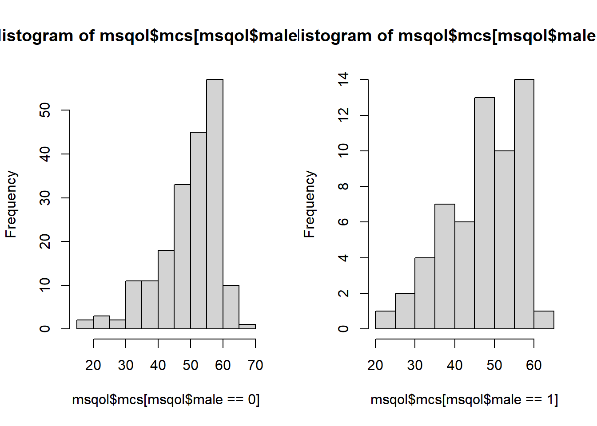
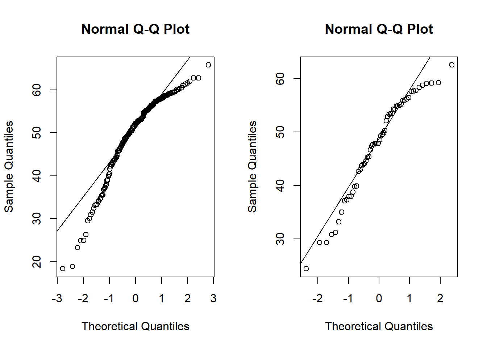

t.test(msqol$mcs,mu=50)
One Sample t-test
data: msqol$mcs
t = -1.228, df = 250, p-value = 0.2206
alternative hypothesis: true mean is not equal to 50
95 percent confidence interval:
48.14726 50.42966
sample estimates:
mean of x
49.28846 Goal: This practicum will go over how to create new variables, complete a two-sample t-test, and complete a Wilcoxon rank sum test in R.
Please load the MSQOL dataset into R. Please note that we have a large sample size so we will use the t-test for the analysis without assessing normality, but you can use the approaches from the previous section to assess normality if you were interested.
Based on your prior knowledge, you know that the general population has a mean score on the mental composite summary (MCS) for the SF-36 of 50 units. We would like to estimate the mean MCS score (variable name in the dataset: mcs). Note that the MCS does not have units, so we will just use the term “units” to remind ourselves to report units in our analysis.
The steps for an analysis are:
State estimand of interest
State type of data
Determine appropriate statistical method
State estimate
Calculate confidence interval and p-value (stat package)
Interpret confidence interval and p-value with a focus on precision
Before we look at the data, we can complete the first three steps of our analysis:
State estimand of interest: Mean MCS score
State type of data: Continuous outcome, single sample
Determine appropriate statistical test: one sample t-test
R will allow us to calculate our summary statistics, confidence interval and p-value using a single command, t.test. For the one sample t-test, we need to specify the variable of interest first as well as the value for the null hypothesis, 50:
Here is the output of the command:
One Sample t-test
data: msqol$mcs
t = -1.228, df = 250, p-value = 0.2206
alternative hypothesis: true mean is not equal to 50
95 percent confidence interval:
48.14726 50.42966
sample estimates:
mean of x
49.28846 The output presented here provides the sample mean (49.3 units). The output also presents the 95% confidence interval for the mean (48.1, 50.4). In addition to this information, R provides the two-sided alternative hypothesis, which corresponds to the p-value (p=0.221).
With this information, we can complete our hypothesis test.
State estimate: \(\bar{x}\) = 49.3 units
Calculate confidence interval and p-value (stat package) 95% CI: 48.1, 50.4; p=0.221
Interpret confidence interval and p-value with a focus on precision: The estimated mean MCS score was 49.3 units, and the range of plausible values is from 48.1 to 50.4 units. The mean in the normal population (50) is included in the confidence interval
In addition to the fitting the one-sample t-test, we might want to assess if the assumptions of the one-sample t-test are met. For the one-sample t-test, this means assessing whether the data come from a normal distribution. Remember with the sample size of 251 observations, the one-sample t-test is appropriate even if the data do not come from a normal distribution because the one-sample t-test is robust to departures from normality with a moderate to large sample size.
In order to assess the normality assumption, we will use summary statistics, graphics, and formal statistical tests. To calculate the summary statistics, we can use the summary, sd, skewness, and kurtosis commands. Remember that we need to load the e1071 library for the skewness and kurtosis commands
Min. 1st Qu. Median Mean 3rd Qu. Max. NA's
18.38 44.26 51.47 49.29 56.30 65.78 1 [1] 9.17998[1] -0.9822499[1] 0.5286531The results of the commands are shown. The reported summary statistics include the mean (49.3), standard deviation (9.18), skewness (-0.98), and kurtosis (0.53). The negative value for the skewness indicates that the data will be skewed to the left, which we will see in the histogram below. The minimum, maximum, and quartiles are also shown in the summary output.
In addition to the summary statistics, we can create a histogram using the hist command and a QQ-plot using the qqnorm command.
Finally, shapiro.test provides the Shapiro-Wilk test for normality. From the Shapiro-Wilk test, we can see that the p-value is less than 0.0001, meaning that there is evidence that the data do not come from a normal distribution.
Shapiro-Wilk normality test
data: msqol$mcs
W = 0.92553, p-value = 6.568e-10Despite the evidence of a departure from a normal distribution, we will use the one-sample t-test results because the sample size is large enough.
Another question of interest based on this initial dataset is whether the mental quality of life as measured by MCS is different in male vs. female RRMS patients. We assume that the male and female RRMS patients in our study represent a random sample of the male and female RRMS patients.
As always, we can complete the first three steps of the analysis prior to looking closely at the data.
State estimand of interest: \(μ_{females}-μ_{males}\)
State the type of data: Continuous outcome, dichotomous predictor
Determine appropriate statistical method: Two sample t-test
As before, R will allow us to calculate our summary statistics and p-value using a single command, t.test. For the two sample t-test, we need to specify the outcome variable first and the group variable second. We separate the outcome and group variable with ~. Note that the default in R is to fit an unequal variance t-test. Since we would like to run this type of t-test, no additional options are required.
Welch Two Sample t-test
data: msqol$mcs by msqol$male
t = 1.5371, df = 93.824, p-value = 0.1276
alternative hypothesis: true difference in means between group 0 and group 1 is not equal to 0
95 percent confidence interval:
-0.6150422 4.8314837
sample estimates:
mean in group 0 mean in group 1
49.77562 47.66740 The output presented here provides the means in the two groups, from which you can calculate the difference (49.8-47.7 = 2.1 units). The output also presents the 95% confidence interval for the difference in the mean (-0.6, 4.8). In addition to this information, R provides the two-sided alternative hypothesis, which corresponds to the p-value (p=0.128, orange arrow).
With this information, we can complete our analysis.
State estimate: \(\bar{x}_{females}-\bar{x}_{males}\)=2.1 units
Calculate confidence interval and p-value (stat package): 95% CI: -0.6, 4.8; p=0.128
The estimated difference in mean MCS score comparing females to males was 2.1 units, and the range of plausible values is from -0.6 to 4.8 units. The confidence interval includes values showing that males have a slightly higher MCS score or females have higher MCS scores.
If we had completed the analysis assuming equal variances, we would have arrived at the same conclusion. Please try this on your own.
As you learned in class, the two-sample t-test requires a normality assumption. We can assess the normality assumption using both graphical approaches and statistical tests. First, we make histograms and QQ-plots separately in the two groups.


Each of these graphs show that the data do not follow a normal distribution. From the histogram, we can see the skewness in the data by observing the right tail. From the QQ-plot, we can see that the points do not sit on the line.
In terms of formal statistical tests, we can use the Shapiro-Wilks test in each group separately using the by command. For this, we type the by command. Next, we choose the variable that we want to analyze (mcs). Then, we specify the variable that defines the groups (male). Finally, we write the command we want to use (shapiro.test).
The results of the command are shown here:
msqol$male: 0
Shapiro-Wilk normality test
data: dd[x, ]
W = 0.91323, p-value = 3.123e-09
------------------------------------------------------------
msqol$male: 1
Shapiro-Wilk normality test
data: dd[x, ]
W = 0.94847, p-value = 0.01549We can see that the Shapiro-Wilk tests in each group show that there is evidence against the data coming from a normal distribution (male=0 first and male=1 second) because both the p-values are small.
As in the one sample case, we can use the two-sample t-test results in this case because we have a sufficient sample size for the results to be valid even with data that do not come from a normal distribution. Alternative approach in the presence of a departure from normality are to switch to a nonparametric test to compare the groups or to transform the data and compare the transformed variable using a two-sample t-test. When we switch to a nonparametric test, the most common approach is the Wilcoxon rank sum test, which we can fit in R using the wilcox.test command. This command is very similar to the t.test command:
Wilcoxon rank sum test with continuity correction
data: msqol$mcs by msqol$male
W = 6448, p-value = 0.0794
alternative hypothesis: true location shift is not equal to 0The p-value for the test of the null hypothesis of the same distribution in the two groups is 0.0794 (blue arrow).
Finally, let’s show how to use a log transformation. Note that the data in this case is left skewed so a log transformation would not be an appropriate transformation. A different variable in the dataset that is right skewed and therefore might benefit from a log transformation is fatigue. We can see the distribution of fatigue using histogram.
To generate the log transformed version of fatigue, we create a new variable in the msqol data frame. In this command, we provide the name of the new variable (logfatig) and the formula for the value of the new variable on the right side of the <- symbol. Note that we need to add 1 to the fatigue score to account for the 0’s in the dataset.
Now, we can look at the distribution of the new variable using histogram. In this case, the log transformation has not led to a normal distribution so one of the previous analyses should be used.